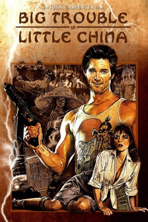

#28 Big Trouble in Little China
 gesehen am 01.02.2016
gesehen am 01.02.2016
 
 IMDB-Wertung: 7.3 / 10
IMDB-Wertung: 7.3 / 10  Metascore: 53
Metascore: 53 
Der Trucker Jack Burton (Kurt Russell) kommt zu Besuch bei seinem Freund Wang (Dennis Dun), um dessen Freundin vom Flughafen abzuholen. Leider wird die Schöne wegen ihrer smaragdgrünen Augen von den Schergen des Lo-Pan, eines unsterblichen Geschöpf der chinesischen Mythologie, entführt. Lo-Pan braucht das Mädchen, um endlich wieder sterblich zu werden, was Jack und Wang natürlich verhindern wollen. Ihr Weg führt sie nach Chinatown zu dem weisen Egg-Shen (Victor Wong) und von dort in die mystischen Katakomben unter der Stadt...
Jahr: 1986
Dauer: 99 Minuten
FSK: 16
Land: USA Studio: 20th Century FoxTonspuren: DTS - ,
Untertitel:
Auflösung: 1080p (1920×816) Größe: 8878 MB
Genre: Action, Abenteuer, Komödie, Fantasy
Regisseur:  John Carpenter
John Carpenter
Drehbuch: Gary Goldman, David Z. Weinstein, W.D. Richter
Soundtrack: John Carpenter, Alan Howarth
Darsteller:
 Kurt Russell als Jack Burton
Kurt Russell als Jack Burton Kim Cattrall als Gracie Law
Kim Cattrall als Gracie Law James Hong als David Lo Pan
James Hong als David Lo Pan Victor Wong als Egg Shen
Victor Wong als Egg Shen Kate Burton als Margo
Kate Burton als Margo Donald Li als Eddie Lee
Donald Li als Eddie Lee Peter Kwong als Rain
Peter Kwong als Rain- James Pax als Lightning
 Chao Li Chi als Uncle Chu
Chao Li Chi als Uncle Chu- Craig Ng als One Ear
- June Kyoto Lu als White Tiger
 Jerry Hardin als Pinstripe Lawyer
Jerry Hardin als Pinstripe Lawyer James Lew als Chang Sing #1
James Lew als Chang Sing #1 Jim Lau als Chang Sing #2
Jim Lau als Chang Sing #2 Stuart Quan als Chang Sing #4
Stuart Quan als Chang Sing #4 George Cheung als Chang Sing #6
George Cheung als Chang Sing #6 Paul J.Q. Lee als Chinese Gambler
Paul J.Q. Lee als Chinese Gambler Al Leong als Wing Kong Hatchet Man
Al Leong als Wing Kong Hatchet Man Gerald Okamura als Wing Kong Hatchet Man
Gerald Okamura als Wing Kong Hatchet Man- Diana Tanaka als Female Wing Kong Guard
 John Carpenter als Worker in Chinatown , uncredited
John Carpenter als Worker in Chinatown , uncredited- Dawna Lee Heising als Chinese Guard , uncredited
 Leo Lee als Chang Sing Fighter in Ally , uncredited
Leo Lee als Chang Sing Fighter in Ally , uncredited Bill Saito als Wing Kong Hatchet Man , uncredited
Bill Saito als Wing Kong Hatchet Man , uncredited Cary-Hiroyuki Tagawa als Wing Kong Man - Extra , uncredited
Cary-Hiroyuki Tagawa als Wing Kong Man - Extra , uncredited Dennis Dun als Wang Chi
Dennis Dun als Wang Chi- Carter Wong als Thunder
- Suzee Pai als Miao Yin
 Jeff Imada als Needles
Jeff Imada als Needles- Rummel Mor als Joe Lucky
- Noel Toy als Mrs. O'Toole
- Jade Go als Chinese Girl in White Tiger
- Kenny Endoso als Chang Sing #3
- Gary Toy als Chang Sing #5
- Jimmy Jue als Wounded Chang Sing
- Noble Craig als Sewer Monster
- Danny Kwan als Chinese Guard
- Min Luong als Tara
- William S. Wong als Wing Kong Hatchet Man
- Eric Lee als Wing Kong Hatchet Man
- Yukio G. Collins als Wing Kong Hatchet Man
- Bill M. Ryusaki als Wing Kong Hatchet Man
- Brian Imada als Wing Kong Hatchet Man
- Nathan Jung als Wing Kong Hatchet Man
- Dan Inosanto als Wing Kong Hatchet Man
- Vernon Rieta als Wing Kong Hatchet Man
- Daniel Wong als Wing Kong Security Guard
- Daniel Lee als Wing Kong Security Guard
- Lia Chang als Female Wing Kong Guard
- Donna L. Noguschi als Female Wing Kong Guard
Datei: X:\1986\Big Trouble in Little China (1986, FSK16, 1920x816).mkv seit 02.02.2015
Festplatte: HD 1980-1986
 Es gibt insgesamt 50 Filme in der Gruppe '1986'
Es gibt insgesamt 50 Filme in der Gruppe '1986'